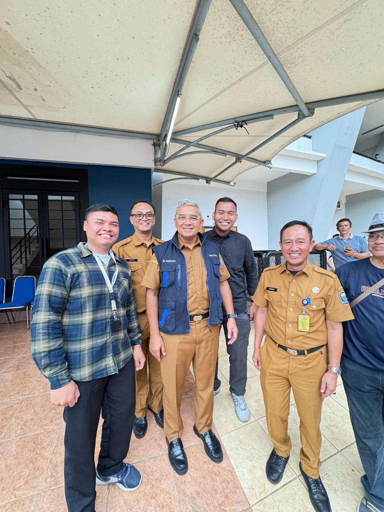

Featured role
Feb – May 2025
Content Production Staff Intern
City Manpower Department (Disnaker Kota Bandung)
- Produced 80 content pieces covering office activities, the official Instagram account, and public announcements.
- Coordinated scheduling and orientation logistics for the department's activity agenda, liaising directly with cross-agency stakeholders.
- Contributed to maintaining consistent documentation and publication materials across various organizational activities.
- Also produced infographics (avg. 50–100 likes) and Reels (avg. 300–1K views) during this internship — see the dedicated project card in Selected Work.